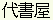

 DAISHOYA movie script
だいしょや
はじめ まして
これ は だいしょや と いう ぶんしょ さくせい そふとうえあ の がめん
ひょうじ です。
まず だいしょや を つかって ｀はじめ まして’ と かいて みましょう。
みぎ はし に ひらがな が ごじゅうおん じゅん に たて に ならんで います。
かせん は くうはく すぺーす を しめし ます。
やじるし を みぎ に よせる と もじ が がめん を よこぎり ながれ だし ます。
それぞれ の もじ は しかくい わく に はいって おり、 その わく を かくだい
する と あらた に ひらがな いっしき が あらわれ、その ひらがな の もじ
それぞれ の なか に また ひらがな いっしき が はいって いる、 と いう ぐあい
に、いれこ しき に つづき ます。
だいしょや の いちばん おもしろい とくちょう は、 ある もじ が
ぶんしょう ちゅう つぎ に でて くる かくりつ が たかけれ ば たかい ほど、
その もじ の しかく わく が おおきく ひょうじ され ながれ て くる、と いう
ところ に あり ます。
かくりつ は その じてん まで に さくせい された ぶんしょ から けいさん され
ます。
つぎ に でて くる かくりつ の たかい もじ は おおきい わく で ながれ て くる
ので、 たいてい の ばあい、 つぎ から つぎ へ と らく に もじ が ひろえる
こと に なります。
それ どころ か、 たんご の かしら いち に もじ を かく と、 その あと は
そふとうえあ が さとって じどう てき に たんご ぜんたい を しあげ て ながし
て くる こと も めずらしく あり ません。
やじるし は みぎ に よせれ ば よせる ほど もじ の ながれ が はやく なり、
ひだり に もどせ ば おそく なり ます。
もじ を ひろう に は やじるし を じょうげ させ ながれ て くる ところ を
まちぶせ すれ ば よい の です。
ちょっと じどうしゃ の うんてん に にて います ね。
おのぞみ の もじ が みえない ばあい は、 ごじゅうおん じゅん で その もじ が
ある べき かしょ に やじるし を もって いって ください。
じき に ひょうじ が あらわれる はず です。
この じっけん は だいしょやの つかいかた が よく わかる よう に わざ と
ゆっくり に して あり ます。
すこし れんしゅう なされ ば、 すらすら と かける よう に なる でしょう。
つかい やすく、 つかい たのしい そふとうえあ だいしょや。
ぜひ いちど お ためし ください。
| Back to Dasher home page |
Thanks to Steve Hiner for help with animations

{kind=link}